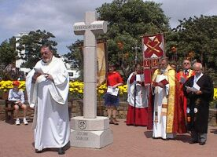
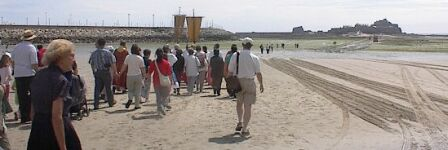
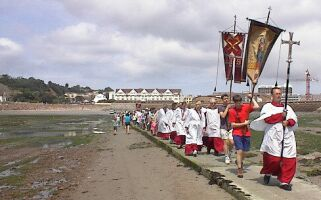
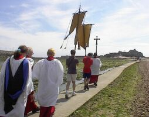
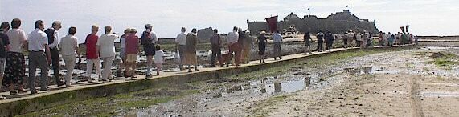
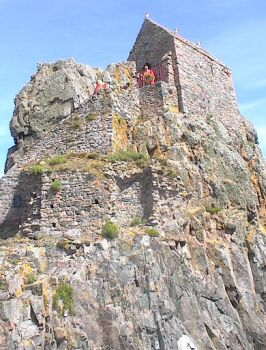
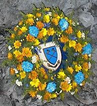
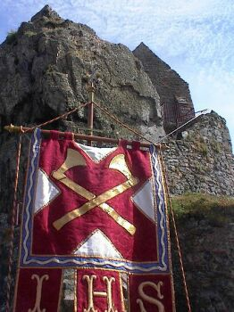
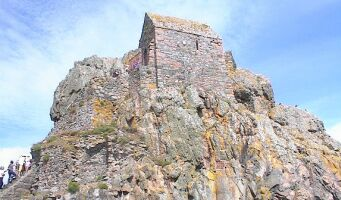

Saint Helier - Saint Hélyi - Saint Hélier

| 1.45pm | Assemble in St. Helier Parish Church |
| 2.00pm | Pilgrimage Prayers & Hymn |
| 2.05pm | depart Church |
| Process through Town to Millennium Cross | |
| 2.15pm | Prayers at the Cross |
| 2.20pm | depart Millennium Cross |
| Process across causeway to Castle | |
| 3.00pm | Service at Elizabeth Castle |
| Music by Salvation Army | |
| Recording of the story of St. Helier | |
| Address by Rev. Geoff Houghton | |
| 3.30pm (approx) | visit Hermitage |
| 4.00pm | end |
| refreshments in café/picnic | |
| 5pm | depart Castle |
Today we honour the memory of the Patron Saint of Jersey, the martyr, St. Helier, who died on 16th July, 555.
We also witness to our faith in Jesus, his Lord and ours.
Hear the words of St. Paul to the people of Corinth:
"We do not proclaim ourselves, we proclaim Jesus Christ as Lord, and
ourselves as your servants for Jesus' sake. For it is the God who said,
"Let light shine out of darkness" who has shone in our hearts to gives us
the light of the knowledge of the glory of God in the face of Jesus
Christ."
Processing through the streets of St. Helier from the Town Church

As we gather at this Millennium Cross, we recall the Good News of Jesus Christ, who was born to inaugurate a new creation, and found a new kingdom built on righteousness, and established with love and sacrifice, We stand here as living signs of God's new creation in our own time, and as visible signs of the promise that he has made to the world of his commitment to its future.

The Pilgrimage sets off across the sands

Crossing the Causeway at low tide to the Islet



Laying the wreath in the Hermitage

The wreath laid on St. Helier's Bed


Pilgrims complete the Pilgrimage by climbing to the Hermitage
Innovations to the annual pilgrimage to St Helier's Hermitage were made this year to build on the success of last year's mystery plays.
Last year the pilgrimage was augmented by the plays in outdoor locations at Elizabeth Castle. This year 'The story of Helier' was enacted by Fraser Martin and a poem in Jèrriais (*) was recited by Geraint Jennings.
The pilgrimage was well-supported this year, said the president of Christians Together, the Rev Fred Noden.
Another innovation was that it started with a prayer and a hymn in the Town Church.
From there, the pilgrimage made its way via the parish Millennium Cross and the causeway to Elizabeth Castle for the service at the Hermitage.
JEP 23/7/2001
(*) NB: prayer in French
R'tou à la page d'siez-mé | Back to home page
E-mail: geraint@societe-jersiaise.org